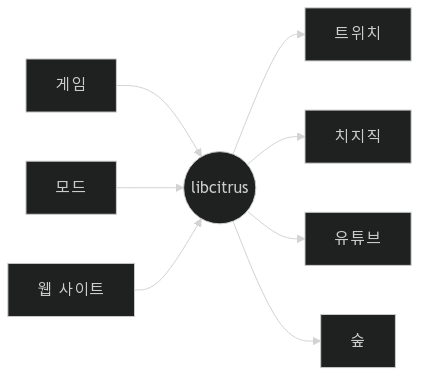
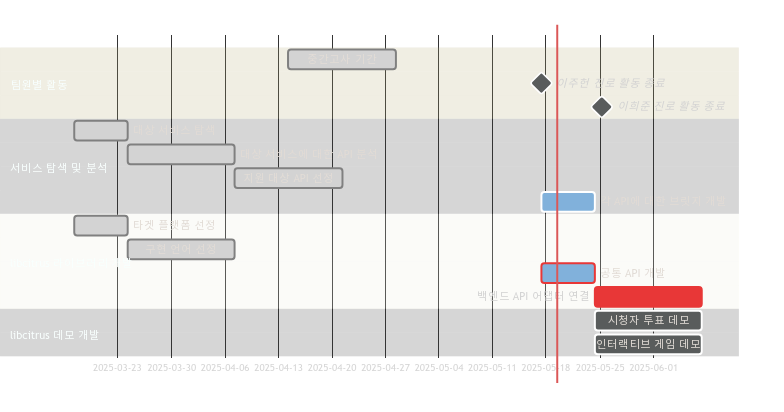
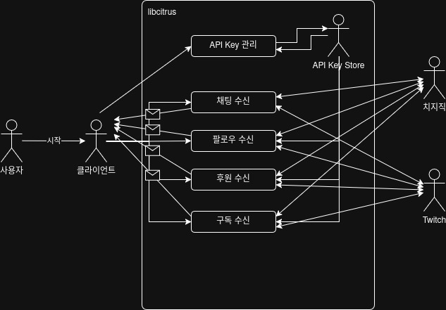
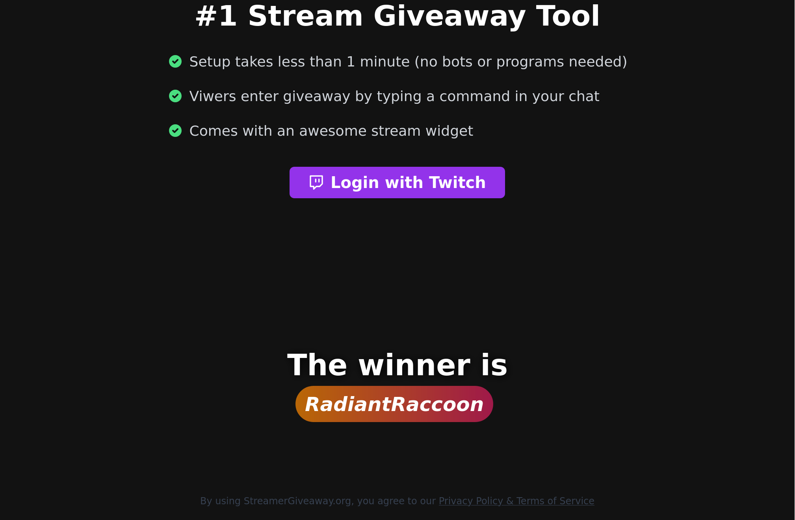
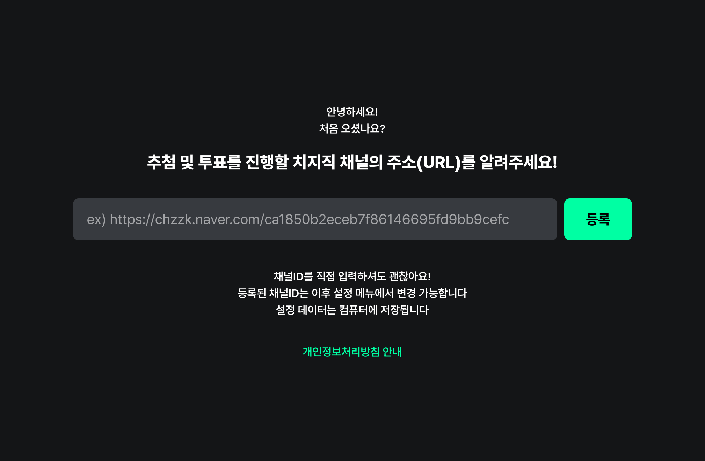

Wake up babe, a universal livestream utility just dropped.
You create, we do the rest. libcitrus.


Rust

| 이름 | 설명 |
|---|---|
| 사용자 | libcitrus를 활용하여 개발한 프로그램의 사용자. |
| 클라이언트 | libcitrus를 활용하여 개발한 프로그램. |
| 외부 서비스 1 (Twitch) | 스트리밍 서비스를 제공하는 외부 서비스, Twitch. |
| 외부 서비스 2 (치지직) | 스트리밍 서비스를 제공하는 외부 서비스, 치지직. |
| API Key Store | 각 스트리밍 서비스별 API Key를 저장하는 내부 자료구조. |
| 이름 | 설명 |
|---|---|
| 채팅 수신 | 클라이언트는 실시간 채팅 수신을 위하여 수신 프로세스를 만들 수 있다. |
| 팔로우 수신 | 클라이언트는 실시간 팔로우 현황 수신을 위하여 수신 프로세스를 만들 수 있다. |
| 후원 수신 | 클라이언트는 실시간 후원 현황 수신을 위하여 수신 프로세스를 만들 수 있다. |
| 구독 수신 | 클라이언트는 실시간 구독 현황 수신을 위하여 수신 프로세스를 만들 수 있다. |
| API Key 관리 | 클라이언트는 스트리밍 서비스 API key를 등록할 수 있다. |
클라이언트는 채팅을 수신하고자 하는 채널을 명시하여 채팅 수신 프로세스를 시작한다. 채팅 수신 프로세스는 데이터 스트림을 열어 클라이언트에게 지속적으로 채팅 데이터를 송신한다.
수신하고자 하는 채널이 존재하지 않거나 차단 등의 이유로 수신이 불가할 경우, 예외 정보와 함께 데이터 스트림을 조기에 닫는다.
클라이언트는 수신하고자 하는 채널을 명시하여 팔로우/후원/구독 수신 프로세스를 시작한다. 수신 프로세스는 API Key Store를 조회하여 API Key를 획득한 후, 데이터 스트림을 열어 클라이언트에게 지속적으로 데이터를 송신한다.
API Key가 존재하지 않거나 만료 등의 이유로 데이터 수신이 불가할 경우, 예외 정보와 함께 데이터 스트림을 조기에 닫는다.
클라이언트는 특정 외부 서비스에 대한 API Key를 등록할 수 있다.
이미 해당 서비스에 대한 API Key가 등록되어 있는 경우, API Key 갱신으로 판단하여 덮어쓴다.
많은 채팅 기반 스트리밍 유틸리티가 존재하나, 공통되는 기능이 없거나 서비스에 한정적


import asyncio
import citrus
import random
app = citrus.union(
citrus.create_twitch("CHANNEL_ID", api_key="API_KEY"),
citrus.create_chzzk("CHANNEL_ID", api_key="API_KEY"),
)
async def main():
chatters = await app.get_viewers()
lucky_chatter = random.choice(chatters)
print(f"Lucky chatter is... {lucky_chatter.name} from {lucky_chatter.platform}!")
asyncio.run(main())
# --> Lucky chatter is... 홍길동 from 치지직!